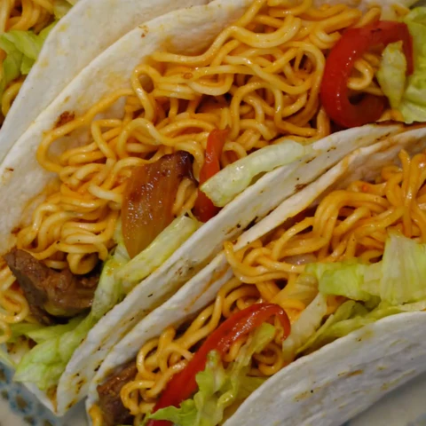

Ramen Taco

Description
It's ramen... in a taco. As featured in Cathy Mitchell's award winning cookbook "Ramen Joy".
Ingredients
- 1 pack of Ramen
- Red Pepper
- Shredded lettuce
- 1/2 white onion
- 1/2 pound flank steak
- Tortillas
- Shredded cheese
Steps
- Clean and cut steak. Marinate with ⅓ of ramen soup base. Set aside. Cut onion and redpeppers.
- Heat up a medium sized pan, add oil and saute onions, red peppers, salt and pepper.Cook for 2-3 minutes.
- While vegetables are cooking, cook ramen noodles. Add marinated meatand cook for 4 minutes (will depend on the size of the meat).
- When noodles are done cooking,drain out water and add the rest of the soup base and seasoning oil.
- Mix, set aside. Heat uptortillas on medium high heat and add cheese, coverand let it melt.
- Remove from the pan and add vegetables, meat, ramen and lettuce.
- Take 2 bites and probably throw the thing away.